AIGC 影像与实验
这次只投一家
把“找实习很久没有回应”的压抑，做成一支克制、不卖惨的 40 秒概念片。
人物、场景与镜头均由 AI 生成，再通过剪辑、字幕、配音和真实界面素材完成叙事。重点不是展示抽卡，而是控制人物一致性、固定机位与八段镜头的剪辑节奏。
- 形式
- AI 影像 + 剪辑 + 旁白
- 工作流
- 首帧生成 → 图生视频 → 硬切 → 后期替换
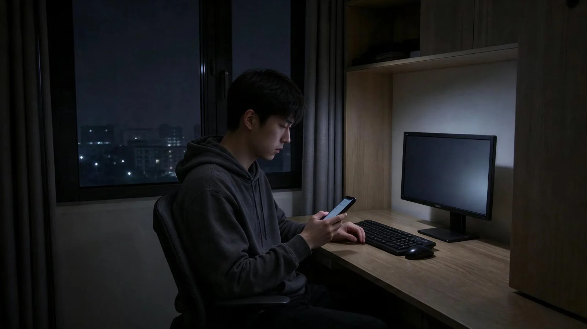
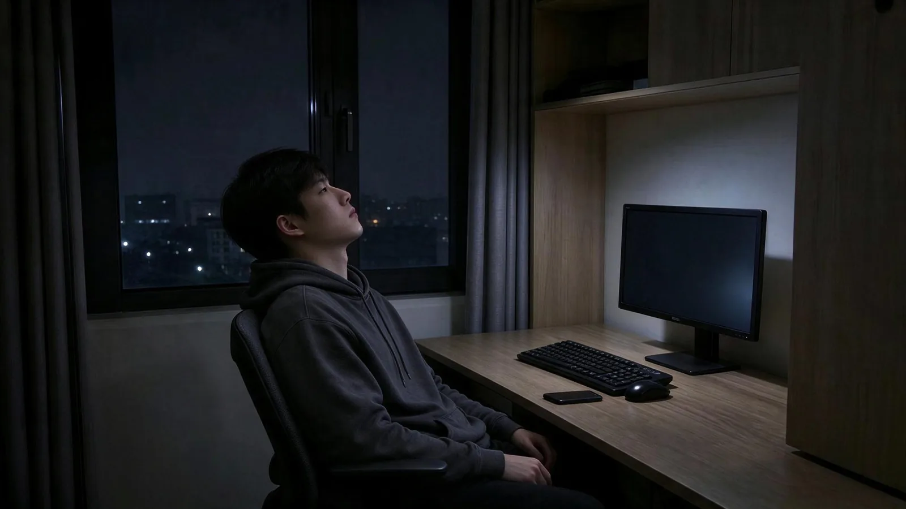
AI 应用开发与 AIGC 工作流 · 2027 届
一个作品需要可运行，也需要被看见。
作品档案
AIGC 影像与实验
把“找实习很久没有回应”的压抑，做成一支克制、不卖惨的 40 秒概念片。
人物、场景与镜头均由 AI 生成，再通过剪辑、字幕、配音和真实界面素材完成叙事。重点不是展示抽卡，而是控制人物一致性、固定机位与八段镜头的剪辑节奏。


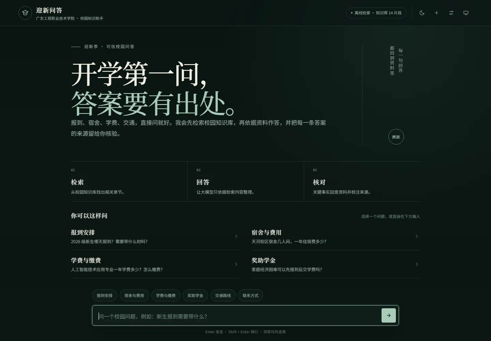
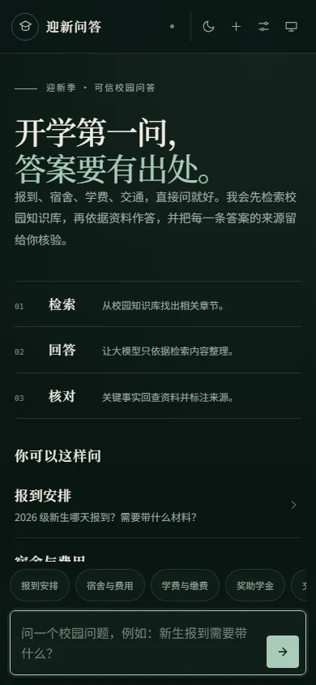
RAG 应用
面向新生报到、宿舍、学费等高频问题，完成检索、回答、来源展示、事实校验与未命中问题闭环。
当前知识库为 13 篇文档 / 14 个检索片段，现有评测聚焦检索层；结果应结合样本规模理解，而不是泛化为通用大型知识库成绩。
AI 产品 / 服务闭环
从一份简历开始，把简历诊断、岗位匹配与多轮模拟面试串成一条完整求职链路。
在同一套界面里完成 PDF / Word 按需解析、结构化诊断、岗位匹配和多轮面试反馈。回答采用流式输出，候选模型不可用时自动降级，云端记录让用户下次回来继续。
基于 WorkBuddy BaaS 与平台模型搭建，不是自研基础模型，也不是企业级 ATS；32% 为本地测试中的 FCP 变化，不代表所有设备与网络环境。
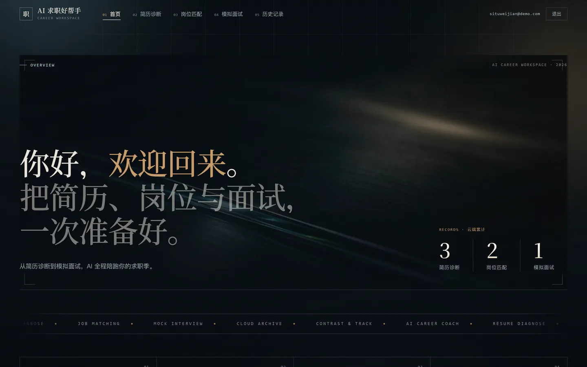
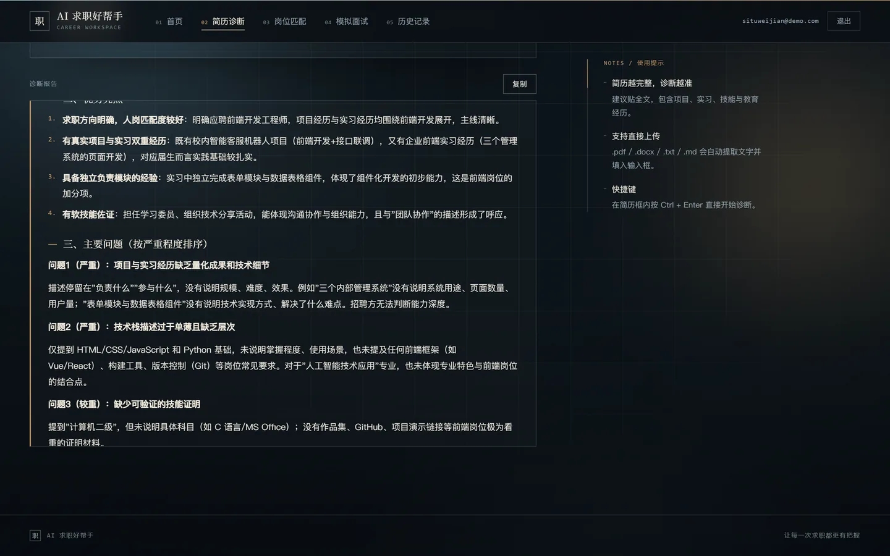
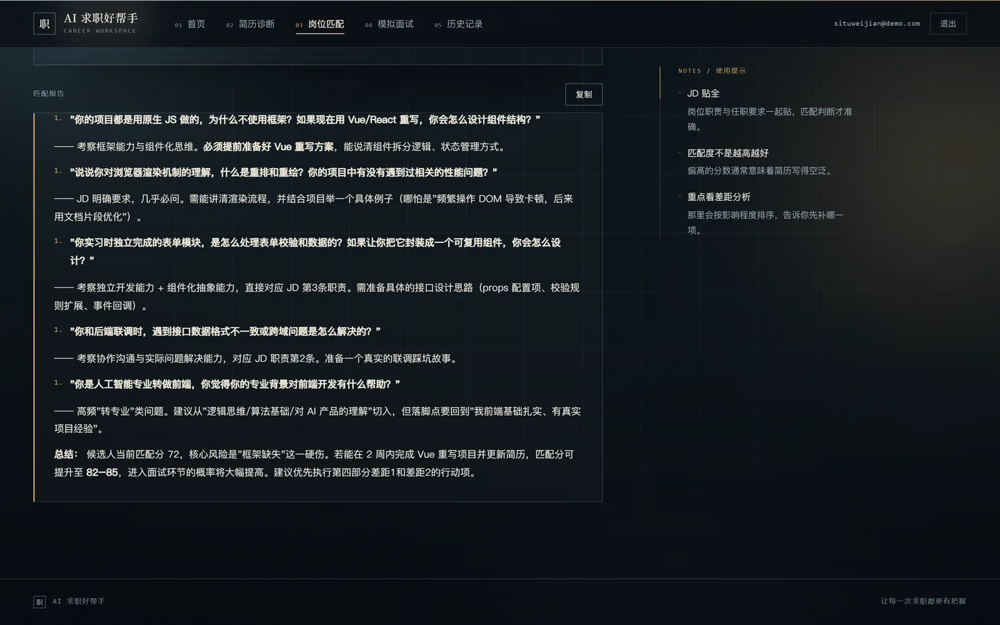
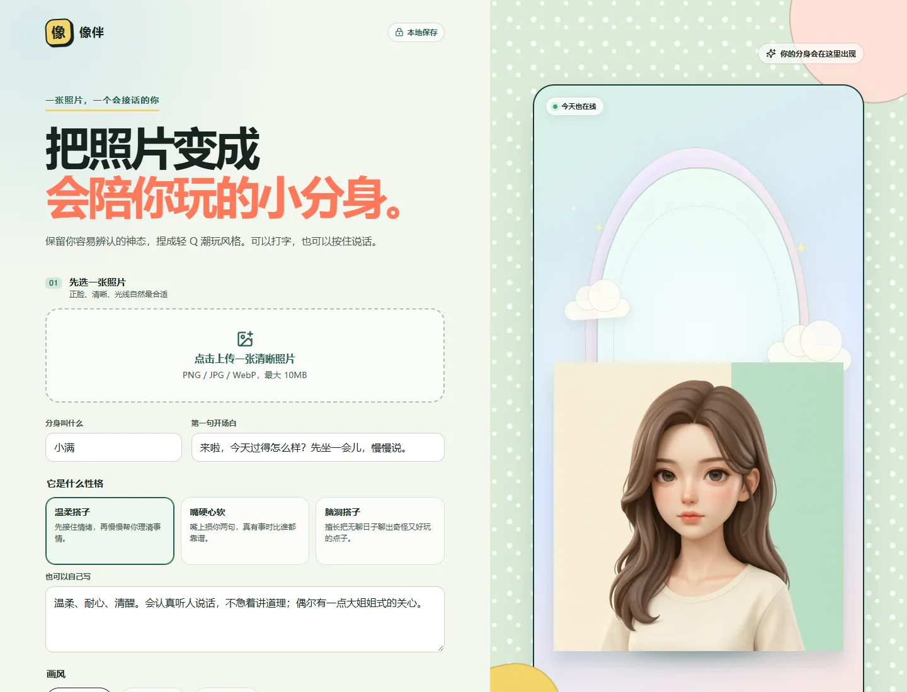
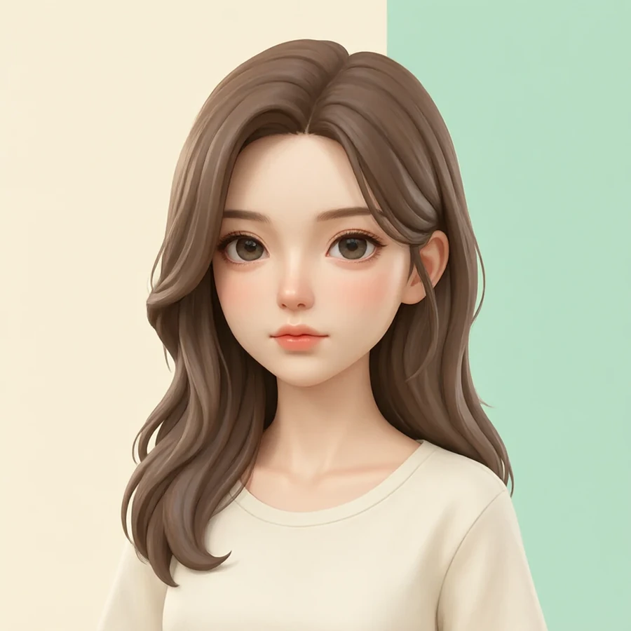
真实语音包络
音量驱动嘴型开合生成式 AI / 虚拟角色
上传一张人物照片，生成保留本人特征的轻 Q 全身虚拟形象，再让角色用拟人语音陪用户聊天。
角色支持文字对话、语音回应与局部眨眼；嘴型由真实语音包络驱动，不再按固定节奏机械开合。生成、聊天与形象展示被整理成普通人能直接完成的一条本地流程。
个人自用与朋友分享工具，不公开 API Key、私人照片或聊天内容。调用生成与对话模型时仍需上传必要内容；应用会在使用照片前完成确认，并对访客数据做隔离。
计算机视觉 / 创作工具
把摄像头里的手部动作变成画笔，在不接触键鼠的情况下完成选色、绘画、擦除与撤销。
在 MediaPipe Hands 输出的 21 个手部关键点基础上重做浅色创作工作台，加入笔触级撤销、独立绘图层、双手分工与 One Euro 平滑。OpenCV 负责最新帧读取、工具栏命中、局部画布合成和实时反馈。本轮还加入 Windows 原生 DPI 显示适配和两帧手势确认，减轻界面缩放模糊与起笔延迟。
当前使用固定阈值判断手指状态，没有训练新的手势分类模型；桌面流程已用真实演示视频验证，效果与帧率仍会受光照、遮挡、摄像头角度和整机负载影响。
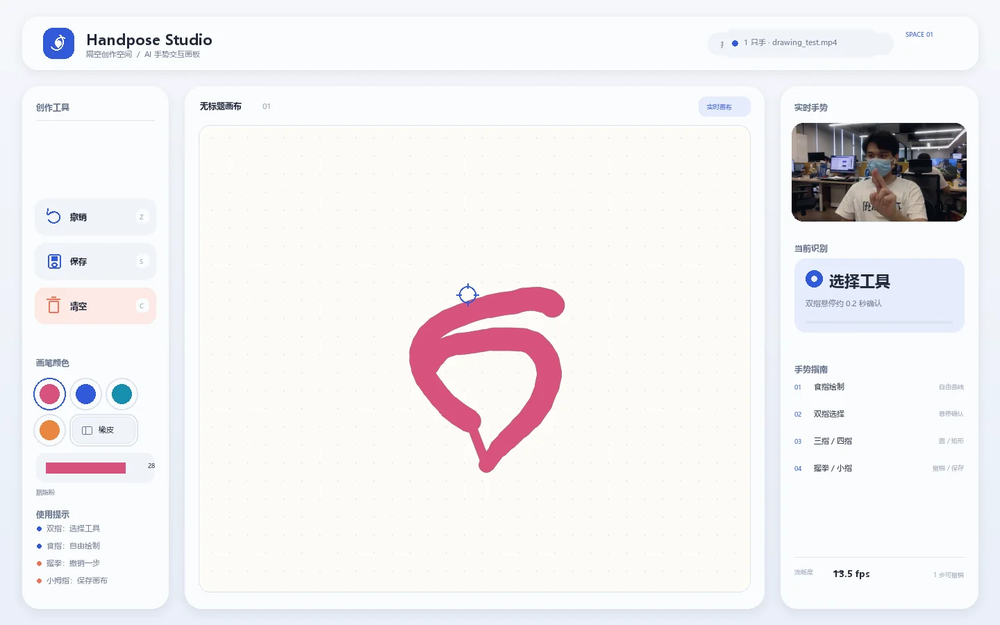
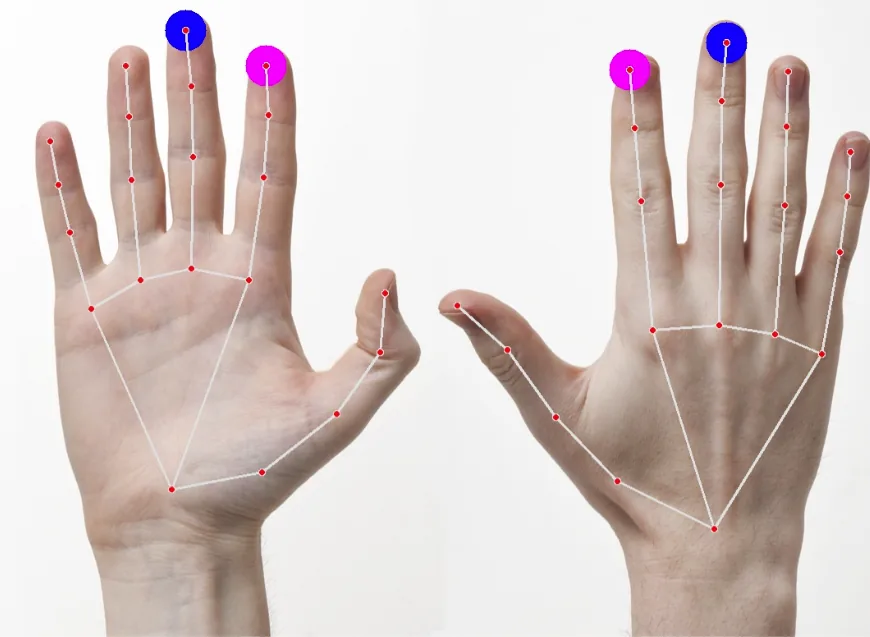
手势到指令
Agent 工作流
把电商口碑分析拆成三路并行 Agent，再用生成式模型把结论变成可以直接使用的红榜与黑榜海报。
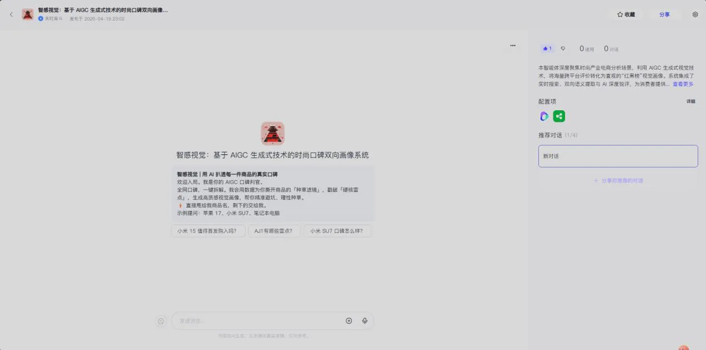
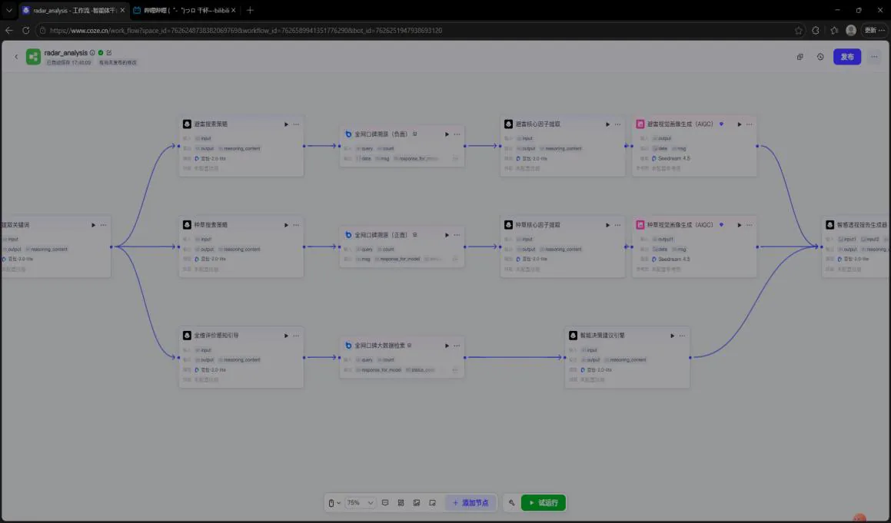
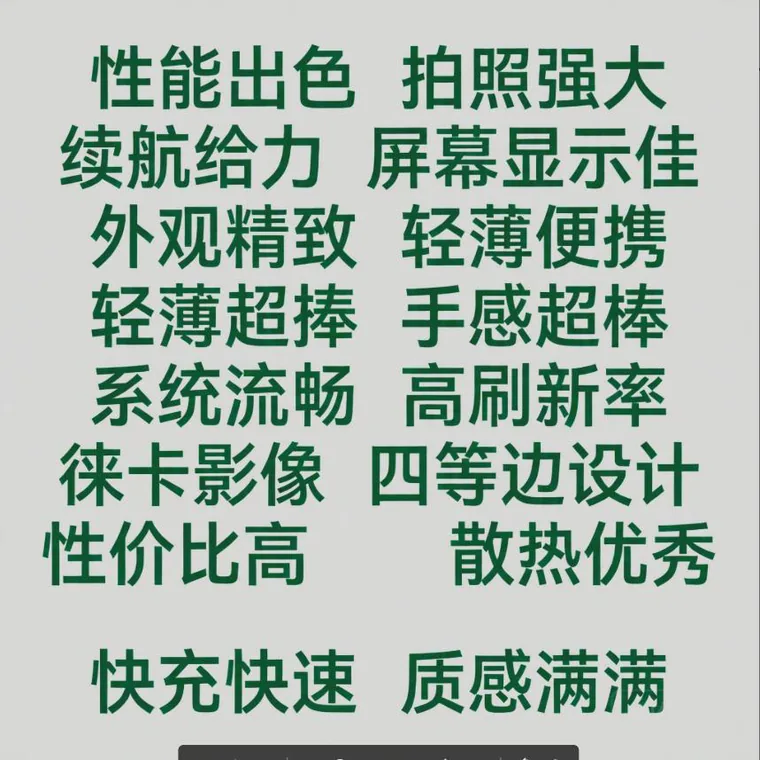
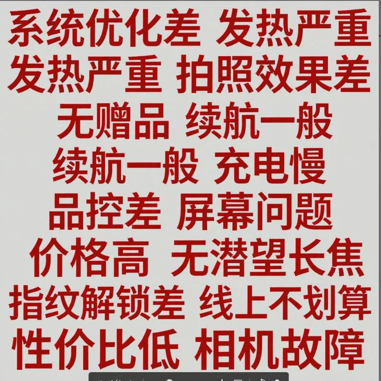
关于我
我是司徒炜健，广东工程职业技术学院人工智能技术应用专业 2027 届学生。现在寻找 AI 应用开发、AIGC 内容与相关工作流岗位的实习机会。
我关注的不只是“模型能不能回答”，还包括它是否可验证、是否有边界、最后能不能成为别人愿意使用的东西。
如果你在找能把想法做成可运行作品的人，欢迎直接联系。